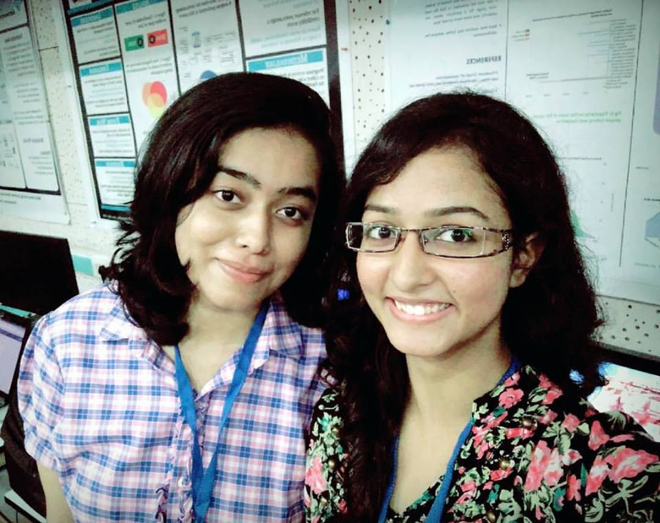
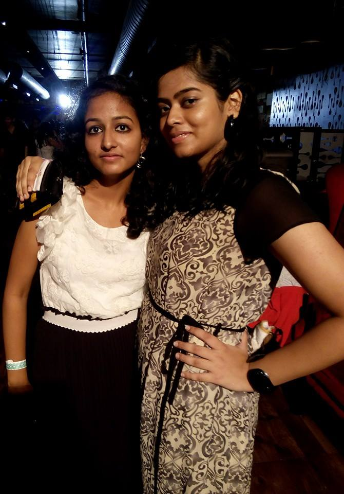
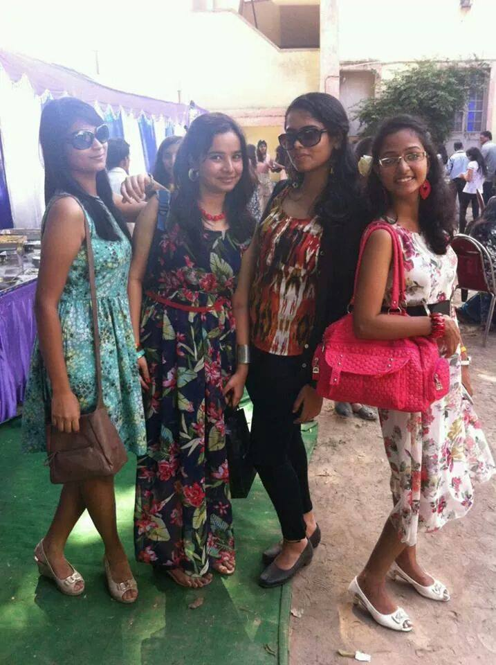
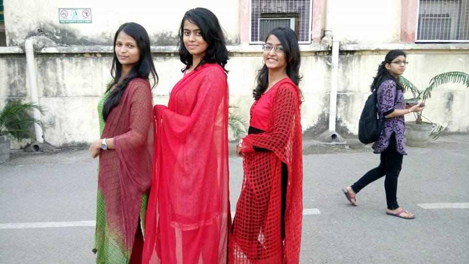
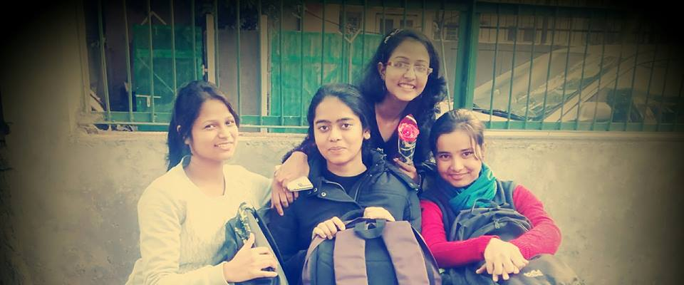
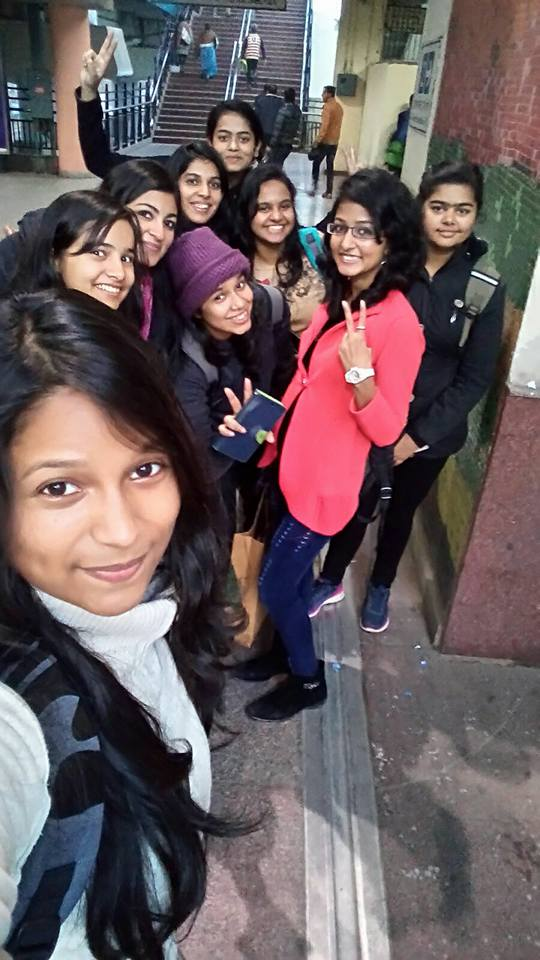
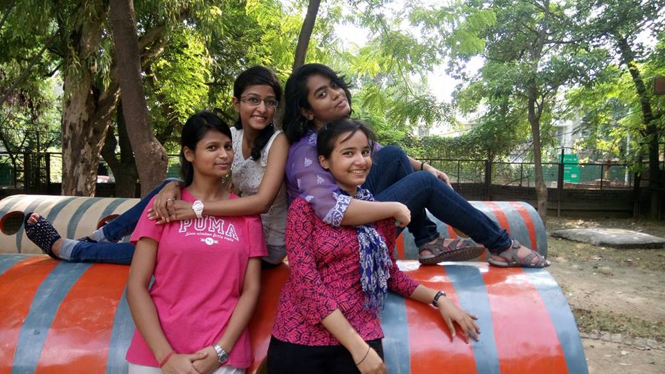

Dear Sonali,
Many, Many Happy returns of the day.
May you have a long long life.
And also, a successful one.
And also, may you are able to gain some weight in the near future. Please be a little fat, just a little. Pleaaaasee! You have become all the more thin.
Also, congratulations, for turning 21! Yeah, You can laugh at this. I am congratulating you for turning 21 in your typical expressions... BUT BUDHI ho toh gye ho AAP. *SMirkiNg* {Please dont read this as smoking, okay?}
So finally, after listening to the Happy Birthday Song!! and cracking the pwd you are here.Phewwwww Kaafi brain Gym hogya... LOL!
Also, You know how creative I am, like award winning creativity...hehehe, hence this.
I hope you do like the efforts. It surely did take some time. Nevertheless, I have got another html/css project on my resume? Do you thing I should be adding this on my LinkedIN? Hahaha...
So, now besides, Viral Times, I'll have another fully function webpage. HAHAHA
No?

So, it has been like a realllllllllllyyyyyy long journey. The first friend, I made on the very first day. I really did wonder how come somebody can speak so much without even knowing me?? Hahaha...
But thats pretty much not you fault. My mental state is to be blamed! Lol! Thanks for bearing with me, in the initial days. I know you still try and do.Hahaha. But thanks for sticking up, like always up!
With you I have had many Firstsss.
The first party I attended in such a shady place.

Then the college's fresher party.

And the rest is history.Lol!
We have had so many cherishable moments together.
SO, SO many
The Diwali Fete, The 500 crore pictures day. Anddd.......

Now I actually cannot imagine going to a party without you :) And this is going to be the third bday of yours, that we are together. People havebeen added, deleted, but we have remained glued.
FROM the 19 Jan 2015:

to the 19 Jan 2016: Double the number of people

AND now to 2017:
It has been a great journey so far, with not so many ups and downs. Yeah! We pretty much have been together always. You have been a great friend in many aspects. I wont say that things have been the same since the beginning.
But things dont always remain the same too.
But friendships definitely do.
And I'll be there for you {Please note the rhymes}.
This goes unsaid. You can always bank upon me, no matter I come online on whatsapp or not, no matter you find me Well-groomed or not!!
But I'll be there. And I hope you do toooo!!
I remember you telling me, on 19th Jan 2016, for a card. I am sorry. I was upset at you. I wasnot after wards. But yes I was then, on some realllllllly stupid thing. You'll laugh when, I'll tell you.So no point. I wish I could turn back time. And do the same.
So this time its a whole html login page enabled greeting. I hope you do consider my efforts. Please do!!
Aur?
Aur haan! I remember my bridesmaid-speech-giving-game. So, in continuation ...
Sonali, you are a really sporting person. And I really wish I could be half the oblivious as you are, to certain things as you are, in a positive way. I really do. I still havenot been able to decode your brain that perfectly remembers each and every nitty-gritty of a subject, but fails to acknowledge the the obvious,(At times). It is amusing. Atleast, for me.LOL!
But yes, I do find your random, at the drop of a hat replies, verryyy funny. You are a wonderful person. I dont really think somebody else can lighten up the mood like you do, in such an unintenional way. You really are the joey to the BADA GROUP.
Also, what I appreciate in you is your innate quality of being a doting daughter. Hindi mein bolun toh *Tumhare gharelupnta ne dil touch krlia hai* :)
And not to forget your craftiness. I absolutely love the masterpiece my WE-4 is able to create. That reminds me, We-4 hasnot been active for a while. Time that we do it.

So, I am not going to make it an Infinite Scroll!!.
Time That I rest my thoughts.
Stay Happy
Stay Crazy
Stay the Ghumukad you
Once Again Many Many Returns of the day
With lots of love and warm wishes.
Ria Pant